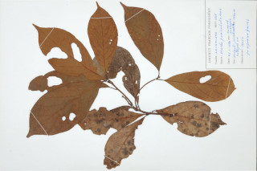

Images :



| Habit : | Trees up to 15 m tall. |
| Leaves : | Leaves simple , alternate , spiral ; petiole 1-2 cm long, planoconvex in cross section, grey pubescent when young; lamina to 9-21 x 4-9 cm, generally oblanceolate , apex abruptly long acuminate , base cuneate , grey pubescent beneath at least when young; midrib slightly raised above; secondary_nerves ca. 7 pairs; tertiary_nerves distantly percurrent . |
| Inflorescence / Flower : | Inflorescence axillary slender panicles , grey pubescent . |
| Fruit and Seed : | Berry , ovoid , 1 cm across; seed 1. |